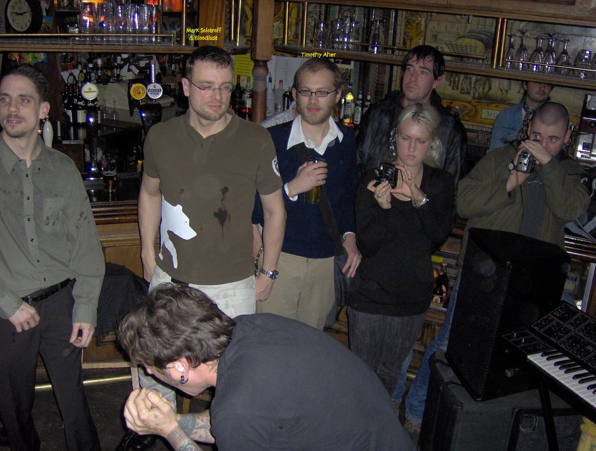
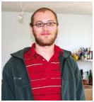

London, UK Late 2007
sweet
tim
sweet
soul where did you go
an
artist without a canvass
a
man child full of grace
your
life echoes
a
deep song
along
the open eyes
of
many friends
of
family
of
a world in need,
where
drifts your truth
in
the light of time
on
your walk of forever
and
a world’s loss
so
breaks our hearts
sweet
tim,
for
where have you gone
-
love jude
Brookfield grad remembered for helping others
By Eileen FitzGerald STAFF WRITER

Brookfield
High graduate Timothy Aher, 25, died unexpectedly in a suburb of London, where
he was...
BROOKFIELD
-- Brookfield High School graduate Timothy Aher was sensitive, smart, curious, a
linguist, accomplished musician and a gifted student who was laying the
foundation for a life in public service.
Aher,
25, died unexpectedly Sunday in his apartment in Ilford, a suburb of London,
where he was attending the University of Notre Dame's London Law Programme.
Authorities said no foul play is suspected.
"He
was interested in so many things. He had a magical mind," Aher's mother,
Bonnie, said Wednesday. "He could really make deep and wide associations
and come up with analyses so quickly. But he was so sensitive. Life was
difficult for him."
Bonnie
Aher said Tim had struggled with depression.
He
came home to join his family at Christmas and also met them in France in
October.
Aher
graduated from Brookfield High School in 2000 and from the University of Chicago
in 2004 as a linguistics major. He then worked at Bank of America for two years.
He was currently in Notre Dame Law School's yearlong London program for
second-year students. He shared an off-campus apartment.
Aher
planned to practice international law, but two work experiences redirected his
focus, his parents said.
During
Christmas break in 2000 he worked on housing issues for people with AIDS at a
legal aid office in Brooklyn, N.Y. Last summer, as an intern at Connecticut
Legal Services in Waterbury, he worked on housing
and
Social Security issues for the poor.
"He
was thinking of doing that for his career. The work he did in Waterbury last
summer he felt was really important," his father, Chris, said.
"Tim
was very focused on using his education and the law to help other people. I
thought the world of him," said Tom Ford, a staff attorney at Connecticut
Legal Services who worked with Aher last summer.
"He
was blessed and gifted, and most people take it for granted," Ford said.
"You could see that Tim recognized that if we didn't help (the clients)
they wouldn't be helped, and that the effort you put in is rewarded. Tim got a
genuine thrill out of helping people."
Aher
had broad interests and many strengths. He was an accomplished guitarist, and he
fenced at the Candlewood Fencing Center in Danbury, where his father coaches.
Chris Aher said his son was a good technical fencer and enjoyed fencing with
friends but was not competitive.
While
at the University of Chicago, Aher was the manager of its radio station. He was
fluent in Russian and French, could read German proficiently, and also studied
central Asian languages.
Tim's
brother, Brian, 22, said he and Tim were different growing up.
"He
was an intellectual and I was an engineer," Brian said, eliciting the only
laugh for the family Wednesday during their painful recollection of Aher.
Notre
Dame University held a memorial Mass for Aher in Notre Dame, Ind., Monday
afternoon, when law professor and the Rev. John Coughlin paid tribute to Aher.
"Although
Tim was neither a Catholic, or, from what I know, a person of obvious religious
conviction, he was a man with a deep and refined spirit that led him to devote
his considerable intellect to service to some of the most poor and powerless of
our society," Coughlin said. "In my opinion, Tim's example represents
the best of what it means to be a law student at Notre Dame."
Aher
also had wide-ranging friendships, his mother said, including childhood friend
Molly Hegarty, 25, who had known him since he moved to Brookfield in sixth
grade.
"Tim
was humble with his brilliance and generous with his knowledge," Hegarty
said. "His unique perspective and command of obscure topics breathed humor
and beauty into otherwise mundane situations."
He
was a loyal friend, Hegarty said.
"He
was so caring and non-judgmental. He was a great friend and confidant."
Another
high school classmate of Aher's, Tracy Kaufman, said she'd been in touch with
him by e-mail in the past year.
"He
was never going to be a typical lawyer. It would be like him to work with
disadvantaged people," she said. "He was very well liked. This is an
incredible loss."
Aher
was in the humanities program for the academically gifted while at Brookfield
High School, where he was remembered as bright, capable and enthusiastic by
teacher Eugene Newell.
"He
was a very interesting young man and I was sorry to hear about his loss,"
he said.
Newell
recalled that Aher was interested in medieval lore and Celtic mythology. Newell
said sometimes the brightest students are the most sensitive to the world.
"It's
a double-edged sword (to be so smart). They are very bright and capable, but
they see all the injustices of life and the absurdity of life," Newell
said. "They have the awareness and perception beyond their years."
Ford
said Aher worked long and hard, beyond the typical hours of an intern, because
of his concern for the clients.
"You
don't meet many people in your life like Tim," Ford said. "To have him
gone at age 25 is just very difficult."
Visiting
hours will be Saturday from 3 to 5:30 p.m. at Valley Presbyterian Church, 21 W.
Whisconier Road, followed by a service at 5:30.
The Aher family asks that instead of flowers, donations in Tim's memory be made to Connecticut Legal Services Inc., 62 Washington St., Middletown, CT 06457.
Friends
remember Law student Timothy R. Aher
Issue date: 2/19/08 Section: News
Friends on Monday
remembered Timothy R. Aher, the second-year Notre Dame Law School student who
died Sunday in a London suburb.
The University released Aher's name Monday morning, a day after both Aher and
sophomore Connor McGrath died in separate and unrelated incidents.
Aher, who was enrolled in the Law School's London Law Programme, died at his
residence in the town of Ilford. He lived there with another Law School student.
The University did not release information about the circumstances of Aher's
death.
Aher, from Brookfield, Conn., had been in London since the beginning of the fall
semester.
Second-year law students Artie Merschat and Adam Zayed, both close friends of
Aher, said he had spoken about studying in London since the beginning of their
first year at the Law School. The program is open to all law students who apply,
and it usually includes between 20 and 30 students, they said.
Students and faculty in London said a rosary for Aher Monday night, and a
memorial Mass will be celebrated there Thursday.
Aher, 25, was a music lover with eccentric interests and a warm personality, his
friends said.
"He was a beautiful and rare and amazing person," Zayed said.
A memorial Mass was celebrated Monday afternoon in the Alumni Hall chapel.
Father John Coughlin, a law professor, presided. Approximately 100 people,
mostly students and faculty from the Law School, attended the Mass.
"People from all walks and cliques in the Law School were there
today," Merschat said. "He brought the Law School together."
Aher had planned to work for Legal Aid, assisting low-income residents, after
receiving his degree, Merschat said. Aher spent the summer after his first year
working for the Legal Aid clinic in Waterbury, Conn. During the winter break of
his first year, Merschat said, Aher worked in Brooklyn helping AIDS patients
remain in their apartments.
"He was never interested in the corporate stuff," Merschat said.
Aher received his
Bachelor's degree in linguistics from the University of Chicago, where he
concentrated in Russian, Zayed and Merschat said.
Aher had a broad appreciation of music, film and literature from various
cultures, Merschat said.
"Tim was pretty much into anything that was obscure," he said.
"He was hyper-intellectual."
One time when Aher was in Chicago, he was preparing to play in a show with a
death metal band, Merschat said, when the other band members told Aher he
"wasn't metal enough."
So, he went to the closest Wal-Mart and bought a black felt patch with a red,
five-pointed star and attached it to a black, hooded sweatshirt.
"He wore that every day the first year of law school," Merschat said.
"He referred to it as his hipster subjugation of death metal culture."
Aher enjoyed studying at Lula's Café on Edison Road, his friends said, adding
that he was one of only a few vegetarians in the Law School.
"We were looking forward to seeing Tim next year and spending '3L' with
him," Zayed said. "He was well-liked among everyone."
A group of law students will drive to Connecticut to attend the funeral service
to be held Saturday, Merschat said.
A memorial Mass for Aher and McGrath will take place Tuesday at 10 p.m. at the
Basilica of the Sacred Heart.
Father Coughlin, of the Law School, will offer words of remembrance for Aher.
Music Notes: whoever makes the most noise wins
Author: Liz Armstrong Date: November 22, 2002
Appeared in Section 1
Growing up in quaint, historic Fairfield County,
Connecticut [Tim Aher says]. "…I spent a lot of
time in my room woodshedding on the guitar and
listening to metal."
In his senior year of high school he found
salvation on IRC, a clunky on-line chat forum
where he met other self-described "lonely teenage
guys," striking up a particularly close
friendship with one named George Moore. They
bonded over music and their mutual hatred of
school and decided to start a band. When Aher
went over to Moore's house for the first time, he
saw a ton of records by groups like Whitehouse
and Acid Mothers Temple--bands he'd never heard
of. Moore told him his uncle Thurston (yes, that
Thurston Moore) turned him on to almost all of
the experimental music in his collection.
Aher and Moore, and later Moore's younger
brother, started rehearsing as the Duvet Cover,
switching off on guitars, electronics, and drums.
They played in basements and coffee shops to
like-minded kids from IRC channels, and felt
triumphant whenever they got kicked out for
making an intolerable racket.
Currently in his third year of linguistics
studies at the University of Chicago, Aher's also
filling in as program director at WHPK, the
school's radio station, for a friend who's in
London for the quarter. He says he was initially
attracted to noise and experimental music because
it alienated unsuspecting passersby in the same
way he'd felt alienated in high school. Once he
moved here, however, he realized there was a
community based around what he loved; he saw
"people having fun and acting silly at the
shows." Now he wants to share his noise
addiction--what he calls a "corporal
pleasure"--with as many people as possible.
Earlier this year he started putting on shows at
the U. of C. "It's good for the university," he
says, "because it makes them look hip, and
they've got a big stake in that, especially right
now, because they're trying to expand the college
and not have everybody be socially inept." But
his idea of the best way to socialize the school,
it seems, is to get everyone involved in some
sort of antisocial activity. A few months ago,
when his "improv psych" band, False Sex, played
at a party, one of his friends threw a garbage
can through the wall and Aher body slammed a band
member onto a couch full of girls. Later, when
someone asked him what his "deal" was, he
replied, "Don't you get it? It's an excuse to act retarded."
Aher's latest project is this weekend's Festival
of Marginalized Subgenres, featuring New York
sheet-metal bangers and body slammers Cock
E.S.P., California whizzbangs Mummers (Eype), and
Ohio superserious darkwavers Burning Star Core,
as well as local acts Panicsville, Behold! The
Living Corpse, Vertonen, Winter Carousel, and
others. At some point in the evening, the music
will stop temporarily and Chris Sienko, director
of WHPK's Radio Dada program, will host a
discussion--ostensibly on identity and the
politics of noise music, but who knows--with
Spencer Yeh of Burning Star Core and video artist
Adam Chao. And since, says Aher, "in actual panel
discussions they have dissenting opinions," he's
invited his friend Jonathan Edward
Couperthwait--who doesn't like and doesn't know
much about noise music but "has a really
distinguished-sounding name." The all-ages show
starts at 6 PM on Saturday, November 23, in the
third-floor theater of the University of
Chicago's Ida Noyes Hall, 1212 E. 59th. It's
free; call 773-702-8289 for more information.
Written by Nick Kukla
Delivered to Tim's family and friends following the Connecticut service
02/23/08
I wanted to share with all of you my last, real memory of Tim.
A group of us had gathered together at Rockaway beach towards the end of last
summer. On a pure and perfect day, we picnicked, sunbathed, swam and talked
together.
My clearest memory is of Tim and I swimming and surfing the waves. We would swim
out into the Atlantic, wait for the largest waves, surrender our bodies to their
force and let them take us into shore. This involved a quick dive the instant
the crest of the wave descended upon us, and when we could pull it off, it would
propel us all the way back to the beach. Once in the shallows, we would wade out
to repeat the game again and again.
After some time, our friends headed in to catch the sun and dry off, while Tim
and I stayed out in the ocean. I remember Tim somehow managed to attract a gang
of little, belligerent kids. They decided to swim along with us, all the while
teasing us about our sunburned, balding heads. Tim and I would wait for each
wave, close our eyes and dive, riding them together. More often than not we
collided into rocks or the shore bottom, the worn down pilings, sometimes even
each other or the kids who kept following us around. It did not take much time
to realize that the shimmer of Rockaway beach is mostly a thin carpet of broken
glass in the water. It was no matter though, our cuts and bruises did not hold
us back. Time stood still for us both and the sun and water held us in their
sway. It was a time, among many, when Tim and I had fun.
Tim was someone with whom I could share these moments; he could immerse himself
into everything he experienced and he inspired those around him with the
extraordinary pleasure he took from exploration. The fascination the world held
for him was paralleled only by his ability to interpret and understand it, to
find meaning and communicate what he discovered. His confidence in his ideas
engendered a voice in him that was at once both enlightening and deafening. I
feel lucky to have had conversations with him, and I learned more from him than
he was ever aware.
As a man, he was honest and direct, compassionate without pretense, and a person
who cared deeply for his family and friends.
Tim and I shared our thoughts, we grew close and trusted one other and relied on
each other when we were troubled. We created music together, we learned from
each other, we talked of the future and laughed over the past. He was a person I
truly loved and will truly miss. Across death, he remains: my bandmate, my
brother and my friend.
I never knew his torment first-hand, but I hope now it is quiet, laid to rest in
the dark, silent depths far beneath the waves that bore Tim and me. Deep below
the tumult, I hope he is still, slow and calm. As he sleeps, I will remain here
on these waves, with the comfort of knowing that he is not far from my heart.
So, sink down to rest, my friend. Know that when I am old and tired and ready
for slumber, I will dive down to you. Wait for me brother, and I'll meet you
then.
Eulogy
delived by Manish in London
EULOGY FOR TIMOTHY RYAN AHER
Authored by Greg F. Price, Joshua Rinschler and Manish S. Antani
Delivered by Manish S. Antani
February 20, 2008
University of Notre Dame London Center, London, UK
Tim and I planned on living together next year in South Bend, and it wouldn’t
be lying to say he sort of lived with me last year. Two nights before the first
Contracts exam, a bunch of us were studying at my apartment until late. Shocking
as this may sound, South Bend got some snow…three feet of it in fact. While
Tim was the only one to accept my offer to spend the night, I was happy to offer
him my floor…and he was happy to take it. In fact, Tim was happy to stay
indefinitely.
Soon, he became a household fixture. I woke one morning to find his toothbrush
in my bathroom, returned home one day to see he had brought home groceries. Soon
we were doing each others laundry and planning supper around one another. I told
everyone to sleep over until the weather cleared. Tim took me seriously…he
wanted to stay ‘til Spring.
I was happy to have the company, and who better than Tim? Last year it felt like
Tim was my hidden gem. Tim was the same wonderful person he was this
year—funny, brilliant, at times a bit offbeat — however, while he was loved
by everyone he met, few knew him. I reveled in the fact that despite
being…well…Tim, he always made time to hang out with me, he always was
willing to grab a meal, to share a story, prep for an exam, or watch tv. I feel
privileged to have known ND Law’s best kept secret. As I look around the room
today, its clear: The secret’s out.
Not only because of the kind of group we have here in London, but also because
of the kind of person Tim was, I can say with certainty, he loved every one of
us.
Tim, the feeling’s mutual.
After all, what’s not to like? Tim brought a smile to everyone around him. And
rightly so, Tim’s smile was infectious. One of Tim’s friends at the
University of Chicago spoke with me on the phone about a recent reflection
session held by Tim’s undergrad friends: Kareem’s view mirrored our own
sentiments, he said, “He was just too awesome! There really is nothing that
anyone could find about Tim that was negative.” He thought about it a bit,
paused, and I could hear him smile…“Well,” Kareem smirked, “…maybe his
laugh was a bit loud…”
Laughing came naturally to Tim, though not always at the most appropriate times.
Even so, Tim would never have taken pleasure in making others feel bad. One of
Tim’s best qualities was his accepting nature. I felt like I could tell him
anything and he would never judge me. He prided himself on being a bridge
builder. The fact that today we have a Muslim, a Catholic, an Atheist, and a
Hindu speaking in his memory demonstrates just this.
As Father Coughlin mentioned at the campus-wide memorial Tuesday, Tim had such
compassion for everyone, even those he never met. Tim worked last winter
preventing AIDS victims from being evicted. And spent the summer doing public
interest in Connecticut. Tim hoped to help there again this summer and after
graduation. Tim was a giver.
And it is for this reason that I am so grateful to be able to give back to Tim
in this small way. The greatest privilege of my life is to stand before you, as
Tim’s friend.
I met Tim soon after starting at Notre Dame and was glad to find out that we
were both vegetarians. Having someone to share meals with helped me during the
difficult early stages of law school. However, this often meant I had to eat
what Tim wanted to eat. This burden I think was summed up best by Greg when he
said, “I’ve only had food poison 4 times in my life…3 of them were with
Tim.”
No doubt many here have had similar experiences. Tim was not only always willing
to try new things, he was always anxious to share them with friends. And who
wasn’t Tim’s friend? Tim transcended trends, cliques, and ideologies. A
quote by James Fredericks illustrates Tim’s approach to friendship, “The
vitality of a relationship is not in the enjoyment of similarities but in the
honoring of differences.”
And, Tim was different.
1.) To say Tim was intellectually superior would be a gross understatement,
2.) To say Tim was a hit with the ladies would be a bit of an overstatement,
3.) And, to say Tim was hygienic…would be a lie.
But none of these characteristics defines Tim’s essence. We will remember Tim
for being brilliant, giving, accepting, and good-humored. He was a good person
and a good friend, but Tim would want to be remembered for how he made us feel,
- how he brought joy into our lives through his wisdom and his laughter,
- and—perhaps even more importantly—how he has brought awareness to us
through his tragic death.
Tim’s attitude towards life was a testament to his concern and love for other
people. While Tim displayed an idle sense of whimsy and carefree sprit; he was
bravely hiding an internal struggle. Tim was overwhelmed...with anxiety…and
sadness—demons he had been fighting for many years.
Tim spent his time here on earth teaching us about Hagel, Norwegian black metal,
Neo-Trotsky-ism, and homo sa-cer. In death, he is still teaching us. The lesson
this tragedy illustrates is the necessity to love life, live every moment, and
be there for one another. Tim was with us as long as he was because 1) he had
friends, 2) because we cared, 3) and because he sought help. While Tim’s
demons eventually overcame him, our battle is not over. We must take up Tim’s
torch in pursuit of a cure, and in the meantime, the care of each other.
Wikipedia defines death as, “the end of the life of a biological organism.”
While Tim’s natural life is over, he lives on in everyone in this room:
- Sheryn will smile a little brighter every time she tries to remember Professor
Adams’ email address,
- Josh will relish in the study of Wittgenstein
- Lawrence will find rhythm in Noise, and solace in the unknown,
- Tom will laugh spontaneously, without fear of embarrassment,
- And neck beards will be all the rage in London this spring.
Moving makes me feel alone. Tim had a way of showing up then.
Over my academic career I've had to make a lot of these tiresome moves,
abandoning someplace that left me feeling abandoned as a result. Then Tim might
turn up out of the blue, reminding me I wasn't really alone at all. The first
time was a move in Chicago that I really didn't want to make. More than the help
I was just grateful for his company. Years later I noticed some unfamiliar
handwriting on a box. It was one he'd packed for me that had somehow tagged
along. The tide of academic moves turned this year when I accepted my first good
tenure-track job in Hartford. Of course Tim happened to be working over the
summer in CT. He came out to the quiet, woodsy place I'd moved into to help
again. He was the first person to hear my stereo make a sound in over two years.
I can't remember the first song I played but he thought it sounded amazing. Once
I heard him say that, I did too.
-Seth
the
music i hear
(for timothy aher)
cold
moon light
a
long night
carries
so
young
the
man-child’s soul
and
a poet
can
only cry
the
pain so deep
a
loss so real
he
has passed this life
maybe
peace
yet
nothing
left to feel
the
music i hear
his
life
in
a moon wind rising
to
freedom
to
silence
just
tears stain
the
unused pillows
of
those who loved him,
if
only he could
have
known.
the
sweet light
the
beauty he was
deep
in our eyes.
- love jude